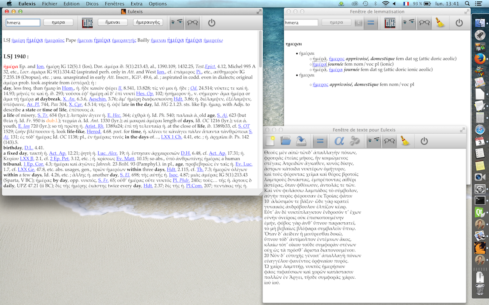

Eulexis v.1.1 – guide juin 2020
index suivant : Fenêtre de consultation
Bien que la fonction première d'Eulexis soit de permettre de consulter les dictionnaires, il peut aussi servir comme aide à la lecture d'un texte. Il faut donc avoir une fenêtre où charger ce texte. Comme avec Collatinus, on peut promener le curseur sur les mots d'un texte et en avoir la lemmatisation et l'analyse.
Quand on a ouvert un texte, on peut avoir envie de le lemmatiser. Ensuite, on lit les solutions trouvées (lemmes et analyses) et si la traduction semble insuffisante, on est tenté de regarder dans les dictionnaires ce qu'ils en disent. Les fenêtres de lemmatisation et de consultation ont donc été séparées. On peut avoir simultanément le résultat de la lemmatisation du texte et la consultation des dictionnaires. Plutôt que d'avoir une fenêtre composite et des onglets, j'ai opté pour une présentation en trois fenêtres indépendantes.
Lorsqu'on ouvre les trois fenêtres d'Eulexis, l'écran peut avoir l'aspect illustré ci-dessous. Cette copie d'écran est obtenue sur un Mac et l'aspect peut être différent sous un autre système d'exploitation.

Chacune des fenêtres peut être redimensionnée et/ou déplacée. Les fenêtres de texte et de lemmatisation peuvent être affichées ou cachées, selon les besoins. Toutefois, l'utilisation des boutons standards (la croix sous Windows ou le point rouge sous Mac OS) n'est pas recommandée. La fenêtre principale doit rester ouverte jusqu'à ce que l'on souhaite quitter le programme. Chaque fenêtre a une barre d'outils, qui lui est propre (détails dans les pages suivantes).
index suivant : Fenêtre de consultation